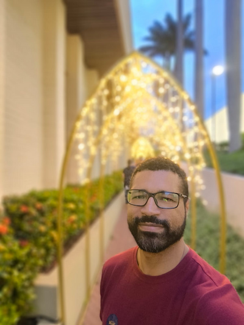

Laércio Santos | WDD 130

Olá! Meu nome é Laercio Santos, tenho 44 anos sou do Pernambuco mas moro em São Paulo. Gosto de praticar esportes como jiu-jitsu e fazer atividades ao ar livre como caminha no parque, corre e fazer musculação. Gosto de estudar tecnologia, apreciar diversar culinarias.